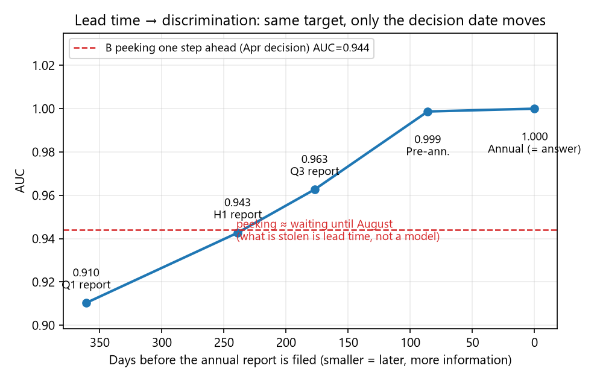
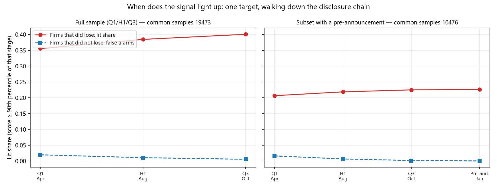

Financial Distress Warning — What "Getting the Data Right" Is Worth
An end-to-end reproducible LightGBM deployment: public filings → a risk list, with who could see what, and when turned into a measurable score gap · 2026-09 ·
local repo C:\dev\finlab-ml (6 commits · 8 commands to rerun · public repo pending)
Problem
"Great offline, useless in production" is rarely a modelling problem — it is misused data: statements that were not published yet, training samples from the future, the latest filing date mistaken for the first one.
Such mistakes raise no alarm: the pipeline runs and the score looks better ⇒ every cell needs a criterion that needs no human referee.
What was built
Panel: China A-shares 2016Q1–2026Q2 · 42 periods · 195,707 rows · 5,252 stocks (four EastMoney bulk tables + the CNINFO disclosure calendar as the point-in-time anchor). Task: sample = (ticker, year) on the Q1 report; label = a loss in that year's annual report; decision time = the Q1 report's actual filing date (median Apr 23) ⇒ a genuine 8–12 month horizon.
Four-arm control (same data / model / test set; only "was the data used correctly" changes): A honest (point-in-time + walk-forward) · B peek at the next report (adds H1 figures) · C random split (training set contains future years) · D negative control (shuffled training labels); baseline = accounting persistence. Plus five disclosure-chain steps (Q1 → H1 → Q3 → pre-announcement → annual report) and a signal timeline of the same firms' trajectory.
Hardest numbers
Arm
What changed
AUC
Share of the top decile that did lose
A honest
—
0.9103
84.95% (base rate 23.9% ⇒ lift 3.55)
B peek next report
features + H1 (filed 121 days later)
0.9442
92.40%
C random split
training set contains future years
0.9246
87.63%
D negative control
shuffled training labels (5 seeds)
0.4993 ± 0.0637
25.2%
Baseline: loss last year
no training
0.7512
70.4%
The 3.4 points from "peeking" ≈ the legitimate score of simply waiting until August (0.9442 vs 0.9427) ⇒ what is stolen is not a stronger model, it is lead time: how much score would you give up to know this much earlier? (Arm A is stable: 0.891/0.896/0.922/0.928 by year; seed range 0.001.)
When does the signal light up: share of eventual losers already in the top decile — Apr 35.6% → Aug 38.5% → Oct 40.1% (false alarms 2.0% → 0.6%); 43.8% of losers never light up ⇒ the ceiling is not the model, it is the day the fundamentals start looking bad.
A trap inside the source: EastMoney's "announcement date" is not the first filing date but the latest filing carrying those figures — for statements with prior-year comparatives it is 365 days late; evidence: Moutai 2016Q1 filed 2016-04-21, EastMoney's income statement says 2017-04-25.

Lead time → discrimination: the red line is the 3.4 "peeked" points, cutting exactly at the H1 point.

When the signal lights up: red = firms that did lose, blue = false alarms.
The one methodology worth keeping
Never subtract two scores from different samples: arm C's 0.9246 vs arm A's 0.9103 looks like +1.4 points, but the test sets differ; restricting A to C's samples gives 0.9122 ⇒ the real gap is +1.24.
A negative control needs a distribution, not a point: one shuffled seed reads 0.5488 ("suspiciously high"), five seeds give 0.4993 ± 0.0637 (0.403–0.583) and only then does it land on 0.5. Across stages, compare within-stage percentiles, keep the denominator identical, beware of ties (docs/口径.md).
Honest boundaries
Label is "annual loss", not an "ST flag"; delisted firms are missing (base rate understated); only dates were reconciled against a second source, the panel values were not. The pre-announcement step is a subset (43.8% base rate); the flash-report step is not doable — "cannot be done" and "not done" are reported separately. And do not read the 96.2% precision as recall: that list covers only 40% of all losers.
Entry points: local repo C:\dev\finlab-ml (commit 93813d2 · 8 commands, end-to-end reproducible · generated artefacts not committed) ·
calibrationdocs/口径.md · findings & red linesdocs/结论.md ·
figuresdocs/figs/ (five) · fetch ledgerdata/fetch_*.csv